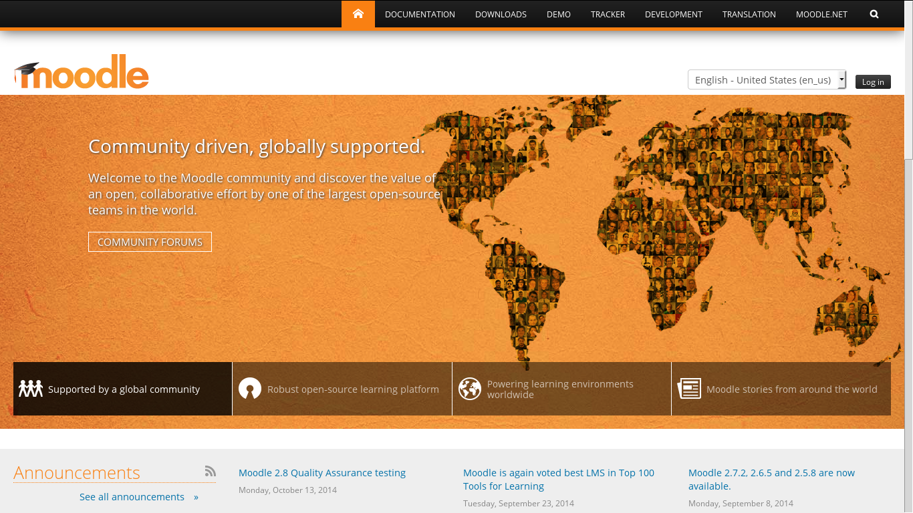
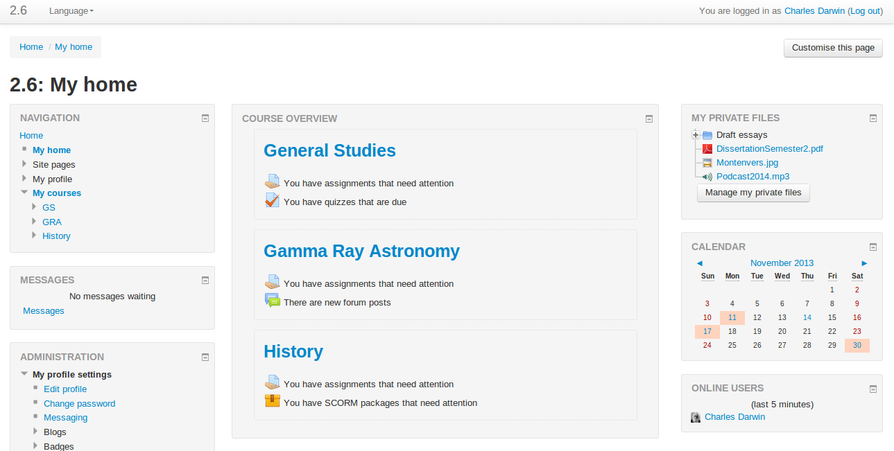
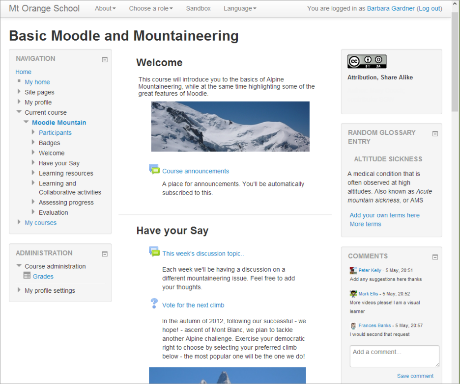
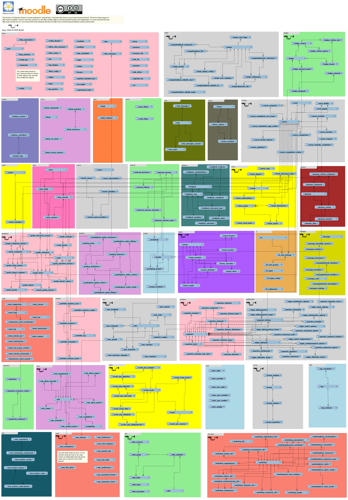
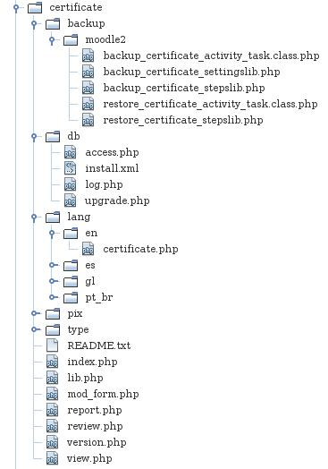
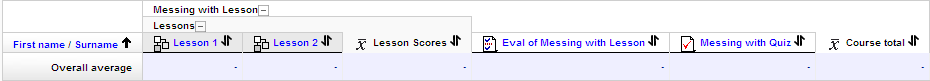

O Moodle é um Ambiente Virtual de Ensino Aprendizagem (AVEA), também conhecido como Course Management System ou Learning Management System.
O Moodle é um software livre, escrito principalmente em PHP e JavaScript. O projeto começou como trabalho de doutorado de Martin Dougiamas (ainda líder do projeto) e em 2012 completou sua primeria década de existência.
Atualmente a maior parte do desenvolvimento e da gerência do projeto é feita no Moodle HQ, sede da Moodle Pty Ltd., em Perth, na Australia. Além dos mais de 50 funcionários no Moodle HQ, a "comunidade Moodle" é formada por pessoas ao redor de todo o mundo trabalhando para universidades, escolas, governos e empresas privadas.
O portal do projeto é construído utilizando o próprio Moodle e a interação entre a comunidade se dá principalmente através dos fóruns de discussão. O principal fórum é o General developer forum, onde são tratadas a maior parte das questões de desenvolvimento/comportamento do Moodle de forma global. Existe também um General problems forum, assim como fóruns para discussão de usabilidade, pedagogia e filosofia, para cada plugin que integra a distribuição padrão, fóruns de comunidades de outros países em diversos idiomas (incluindo a comunidade brasileira) e vários outros.
Além dos fóruns, o Moodle conta também com um Bug Tracker para gerenciar os bugs e contribuições relativas a código-fonte; uma Wiki Oficial com documentação cada vez mais ampla detalhada, para todo tipo de usuário, seja administrador, professor, aluno ou desenvolvedor; e uma ferramenta para tradução.
Você pode baixar o Moodle em https://download.moodle.org.
O código-fonte do Moodle também está disponível no Github em https://github.com/moodle/moodle para navegar nos arquivos e no histórico de commits e também para clonar na sua máquina:
git clone git://github.com/moodle/moodle.gitPara instalar o Moodle, basta descompactar o arquivo baixado (ou fazer o clone do repositório) em um diretório acessível pelo seu servidor web e acessá-lo via navegador.
Antes de começar, verifique os pré-requisitos.
Digamos que você tenha colocado o código no diretório /var/www/html e que este seja o "document root" do seu servidor web, que é acessível via "localhost".
Nesse caso, basta você acessar no seu navegador a URL: http://localhost/moodle que você verá a tela de instalação do Moodle.

Basta selecionar o idioma para instalação, revisar os pré-requisitos e seguir os passos.
Você pode optar também pela instalação via linha de comando:
/usr/bin/php /path/to/moodle/admin/cli/install.phpPara finalizar a instalação (opcional no caso de um ambiente de desenvolvimento) é necessário configurar o CRON (uma tarefa que é executada periodicamente). No CRON é executado desde o envio de email dos fóruns até a criação de backups automáticos, quando agendados. Em um ambiente GNU/Linux, tipicamente é utilizado o crontab para fazer esta execução periódica. Uma linha padrão de crontab seria parecida com:
* * * * * /usr/bin/php /path/to/moodle/admin/cli/cron.php > /dev/nullSe você tiver problemas na instalação, consulte a documentação oficial, as perguntas frequentes ou vá até o fórum de problemas na instalação (em inglês) ou ao fórum de problemas técnicos da comunidade brasileira.
No Moodle, um Curso é a representação de uma classe em sala de aula. Um curso reúne os materiais que os professores, ou a equipe pedagógica disponibiliza; as atividades propostas para aquele curso, podendo ter ou não notas atribuídas; e as pessoas relacionadas àquele curso, com os diversos papéis que desempenham.
Para organizar os cursos, o Moodle oferece categorias, que podem ser hierarquizadas conforme a necessidade do site em questão, levando em conta a restrição de que uma categoria tem apenas um pai, mas pode ter muitas filhas. Esta organização pode ser feita a qualquer momento pela interface web ou "programaticamente" utilizando as bibliotecas do Moodle. É sempre bom lembrar que este pode ser um processo um pouco demorado em sites com muitos cursos e categorias pois o Moodle precisa refazer alguns cálculos de permissões e atualizar diversos caches de "contextos".
Após fazer o login, o usuário pode ser direcionado para uma página que apresenta seus cursos.
Abaixo, um exemplo retirado da documentação oficial.
Um curso é formado basicamente por 4 conceitos: blocos, sessões, recursos e atividades. Além, é claro, de seus participantes.
Blocos são módulos em forma de "caixas" que ficam nas laterais do curso. Eles tem funcionalidade variada: existem dois blocos padrão importantes, um de navegação e outro de configuração; outros blocos incluem o calendário, um bloco de notícias recentes com um resumo das últimas ocorrências no curso, bloco para mensagens instantânea, etc.
Na parte central de um curso Moodle estão as sessões. Todo curso tem pelo menos uma sessão (a sessão 0) e cada uma pode representar uma semana de aula, um dia, um tópico de uma disciplina, dependendo do formato de curso escolhido. Cada tópico é composto por um sumário e uma lista de recursos e atividades.
Recursos são materiais de referência, como vídeos, PDFs, URLs, etc.
Atividades são diversas formas de interação com os alunos, geralmente com objetivo de medir o aprendizado.
A seguir, veremos mais detalhadamente estes e outros tipos de componentes de um ambiente Moodle.
Um exemplo de curso no Moodle (retirado da documentação oficial)
Abaixo podemos ver um modelo da Base de dados da versão 3.0 do Moodle.
Este modelo foi desenvolvido por Marcus Green, fazendo a engenharia reversa da base utilizando o MySQL Workbench.
No site onde é diponibilizado este modelo, você pode baixar também o arquivo .mwb para editar e ver outros diagramas mais detalhados de cada componente.
Documentação oficial sobre blocos
No Moodle, um bloco é um plugin interessante pela sua praticidade. Os blocos podem ser incluídos na página principal do site, nas páginas dos cursos, estão presentes no perfil do usuário, no MyMoodle e até na interface de alguns módulos. Além disso, cada instância de um tipo de bloco pode ter suas próprias configurações e atribuições de papel.
Apesar de todas as possibilidades de um bloco, a interface do Moodle torna tranquila a criação de um novo bloco. No exemplo mais simples, precisaremos de apenas quatro arquivos:
Este arquivo guarda a definição da classe do bloco e é responsável pelo seu gerenciamento e também pela geração do conteúdo a ser apresentado para o usuário
Aqui definimos a classe principal do bloco, que será responsável por gerar o conteúdo apresentado pelo bloco e também fazer alguns controles como por exemplo se existem configurações globais e se são permitidas múltiplas instâncias do bloco no mesmo curso.
Abaixo, um exemplo minimalista de uma classe de bloco:
class block_newblock extends block_base {
function init() {
$this->title = get_string('pluginname', 'block_newblock');
}
function get_content() {
global $USER, $DB;
if ($this->content !== null) {
return $this->content;
}
$this->content = new stdClass();
$this->content->footer = 'block footer';
$this->content->footer = 'Here is the block contents';
return $this->content;
}
public function instance_allow_multiple() {
return true;
}
function has_config() {
return true;
}
}
Este arquivo define as capabilities criadas pelo bloco. Pelo menos duas capabilities são necessárias: "myaddinstance" e "addinstance".
defined('MOODLE_INTERNAL') || die();
$capabilities = array(
'block/newblock:myaddinstance' => array(
'captype' => 'write',
'contextlevel' => CONTEXT_SYSTEM,
'archetypes' => array(
'user' => CAP_ALLOW
),
'clonepermissionsfrom' => 'moodle/my:manageblocks'
),
'block/newblock:addinstance' => array(
'riskbitmask' => RISK_SPAM | RISK_XSS,
'captype' => 'write',
'contextlevel' => CONTEXT_BLOCK,
'archetypes' => array(
'editingteacher' => CAP_ALLOW,
'manager' => CAP_ALLOW
),
'clonepermissionsfrom' => 'moodle/site:manageblocks'
),
);
Neste diretório são guardados os idiomas. Você deve criar dentro dele o diretório "en" e lá o arquivo "block_newblock.php" com as strings em inglês.
Existe 1 string que deve ser declarada obrigatoriamente: "pluginname".
Se você for publicar este bloco na Moodle Plugin Database, você poderá traduzí-lo com o AMOS em lang.moodle.org, caso contrário crie o arquivo lang/pt_br/block_simplehtml.php para traduzí-lo para o português.
$string['pluginname'] = 'Newblock';Este arquivo guarda a versão do plugin, a versão mínima do Moodle exigida, quais plugins são necessários para que este bloco funcione, informações sobre período de execução via cron (caso existir) e outras configurações.
Abaixo, os 14 diferentes tipos de atividades no Moodle padrão. Eles podem ser encontrados no menu "adicionar atividade ou recurso".
Os módulos de atividades ficam todos no diretório "mod", na raiz do Moodle.
Cada módulo é um subdiretório com vários arquivos obrigatórios e quaisquer outros arquivos que o módulo precise. Abaixo, um exemplo de estrutura do módulo certificado.
No diretório de backup ficam os arquivos responsáveis por salvar os dados do seu módulo durante o backup e restaurá-los durante a restauração. O Moodle oferece uma API de Backup e uma API de Restore. Neste curso, não vamos estudar estas APIs pois a implementação de backup/restore de um plugin não é obrigatório e muitas vezes é bastante complexa.
Este arquivo define as capabilities criadas pelo módulo. Pelo menos uma capability é necessária: "addinstance".
defined('MOODLE_INTERNAL') || die();
// Modify capabilities as needed and remove this comment.
$capabilities = array(
'mod/newmodule:addinstance' => array(
'riskbitmask' => RISK_XSS,
'captype' => 'write',
'contextlevel' => CONTEXT_COURSE,
'archetypes' => array(
'editingteacher' => CAP_ALLOW,
'manager' => CAP_ALLOW
),
'clonepermissionsfrom' => 'moodle/course:manageactivities'
),
);
Este arquivo é utilizado na instalação de seu módulo. Nele estão definidas as tabelas (e campos) que serão criadas pelo módulo. Se o seu módulo não precisa de novas tabelas, este arquivo não é necessário. Para criar este arquivo, veja a documentação sobre o XMLDB Editor.
É recomendável que o módulo tenha pelo menos uma tabela com o mesmo nome, com os campos "id", "name" e "course".
<?xml version="1.0" encoding="UTF-8" ?>
<?xml version="1.0" encoding="UTF-8" ?>
<XMLDB PATH="mod/newmodule/db" VERSION="20101203" COMMENT="XMLDB file for Moodle mod/newmodule"
xmlns:xsi="http://www.w3.org/2001/XMLSchema-instance"
xsi:noNamespaceSchemaLocation="../../../lib/xmldb/xmldb.xsd"
>
<TABLES>
<TABLE NAME="newmodule" COMMENT="Default comment for newmodule, please edit me">
<FIELDS>
<FIELD NAME="id" TYPE="int" LENGTH="10" NOTNULL="true" UNSIGNED="true" SEQUENCE="true"/>
<FIELD NAME="course" TYPE="int" LENGTH="10" NOTNULL="true" UNSIGNED="true" SEQUENCE="false" COMMENT="Course newmodule activity belongs to"/>
<FIELD NAME="name" TYPE="char" LENGTH="255" NOTNULL="true" SEQUENCE="false" COMMENT="name field for moodle instances"/>
<FIELD NAME="intro" TYPE="text" NOTNULL="true" SEQUENCE="false" COMMENT="General introduction of the newmodule activity"/>
<FIELD NAME="introformat" TYPE="int" LENGTH="4" NOTNULL="true" UNSIGNED="true" DEFAULT="0" SEQUENCE="false" COMMENT="Format of the intro field (MOODLE, HTML, MARKDOWN...)"/>
<FIELD NAME="timecreated" TYPE="int" LENGTH="10" NOTNULL="true" UNSIGNED="true" SEQUENCE="false"/>
<FIELD NAME="timemodified" TYPE="int" LENGTH="10" NOTNULL="true" UNSIGNED="true" DEFAULT="0" SEQUENCE="false"/>
<FIELD NAME="grade" TYPE="int" LENGTH="10" NOTNULL="true" DEFAULT="100" SEQUENCE="false" COMMENT="The maximum grade. Can be negative to indicate the use of a scale."/>
</FIELDS>
<KEYS>
<KEY NAME="primary" TYPE="primary" FIELDS="id"/>
</KEYS>
<INDEXES>
<INDEX NAME="course" UNIQUE="false" FIELDS="course"/>
</INDEXES>
</TABLE>
</TABLES>
</XMLDB>
Este arquivo trata da atualização do módulo. Após criar o módulo e utilizá-lo em seu site, é possível que você queira adicionar alguma nova funcionalidade e que isso demande a criação/alteração de tabelas e campos.
Como o arquivo "db/install.xml" é utilizado apenas para instalação do módulo, apenas alterá-lo para incluir as novas tabelas ou campos não alterará a estrutura de banco de dados para quem já tem o módulo instalado. É aí que entra o "db/upgrade.php".
Abaixo, vemos um exemplo de atualização do módulo certificado:
function xmldb_certificate_upgrade($oldversion=0) {
if ($oldversion < 2012091800) {
// Add new fields to certificate table.
$table = new xmldb_table('certificate');
$field = new xmldb_field('showcode');
$field->set_attributes(XMLDB_TYPE_INTEGER, '1', XMLDB_UNSIGNED, XMLDB_NOTNULL, null, '0', 'savecert');
if (!$dbman->field_exists($table, $field)) {
$dbman->add_field($table, $field);
}
// Add new fields to certificate_issues table.
$table = new xmldb_table('certificate_issues');
$field = new xmldb_field('code');
$field->set_attributes(XMLDB_TYPE_CHAR, '50', null, null, null, null, 'certificateid');
if (!$dbman->field_exists($table, $field)) {
$dbman->add_field($table, $field);
}
// Certificate savepoint reached.
upgrade_mod_savepoint(true, 2012091800, 'certificate');
}
}
Então, para atualizar seu módulo é necessário:
Assim como no bloco, este diretório guarda os pacotes de idioma de seu módulo. Aqui dentro, cada idioma é um subdiretório ("en", "pt_br", "de", etc.) e dentro de cada diretório deve existir um arquivo com o mesmo nome do módulo (ex. lang/pt_br/certificate.php).
Existem 3 strings que devem ser declaradas: "pluginname", "modulename" e "modulenameplural".
$string['pluginname'] = 'Newblock';
$string['modulename'] = 'newmodule';
$string['modulenameplural'] = 'newmodules';
Este diretório guarda o ícone que você quer que o Moodle mostre ao lado do nome do seu módulo. O nome do arquivo deve ser "icon.gif" e é mostrado com uma resolução de 16x16. Você pode também guardar outras imagens utilizadas pelo seu módulo neste diretório.
A versão 2.4 do Moodle introduziu ícones em SVG para os módulos padrão. Veja a documentação oficial para detalhes sobre como utilizá-los.
Este arquivo é destinado às principais funções do módulo para funcionar integrado com o Moodle. Pelo menos três funções devem ser implementadas pelo módulo:
function newmodule_add_instance(stdClass $newmodule, mod_newmodule_mod_form $mform = null) {
global $DB;
$newmodule->timecreated = time();
// You may have to add extra stuff in here.
$newmodule->id = $DB->insert_record('newmodule', $newmodule);
newmodule_grade_item_update($newmodule);
return $newmodule->id;
}
function newmodule_update_instance(stdClass $newmodule, mod_newmodule_mod_form $mform = null) {
global $DB;
$newmodule->timemodified = time();
$newmodule->id = $newmodule->instance;
// You may have to add extra stuff in here.
$result = $DB->update_record('newmodule', $newmodule);
newmodule_grade_item_update($newmodule);
return $result;
}
function newmodule_delete_instance($id) {
global $DB;
if (! $newmodule = $DB->get_record('newmodule', array('id' => $id))) {
return false;
}
// Delete any dependent records here.
$DB->delete_records('newmodule', array('id' => $newmodule->id));
newmodule_grade_item_delete($newmodule);
return true;
}
A função "newmodule_add_instance" recebe os dados vindos do mod_form.php (discutido em seguida) como um objeto quando uma atividade é criada. Ela é chamada apenas quando o módulo é criado (adicionado ao curso) então aqui deve ter a lógica de criação da atividade.
A função "newmodule_update_instance" recebe os dados vindos do mod_form.php como um objeto sempre que você alterar a atividade e submeter o formulário. O id da instância que você está editando é passado como um atributo do objeto e você pode utilizá-lo para editar quaisquer valores na base de dados para aquela instância.
A função "newmodule_delete_instance" recebe o id da instância do seu módulo de forma que você pode utilizá-lo para remover os registros relacionados do banco de dados.
Além destas funções, caso se deseje trabalhar com notas, é preciso implementar as funções que atualizam e excluem um item de nota e a função que informa as notas para o livro de notas:
function newmodule_grade_item_update(stdClass $newmodule, $reset=false) {
global $CFG;
require_once($CFG->libdir.'/gradelib.php');
$item = array();
$item['itemname'] = clean_param($newmodule->name, PARAM_NOTAGS);
$item['gradetype'] = GRADE_TYPE_VALUE;
if ($newmodule->grade > 0) {
$item['gradetype'] = GRADE_TYPE_VALUE;
$item['grademax'] = $newmodule->grade;
$item['grademin'] = 0;
} else if ($newmodule->grade < 0) {
$item['gradetype'] = GRADE_TYPE_SCALE;
$item['scaleid'] = -$newmodule->grade;
} else {
$item['gradetype'] = GRADE_TYPE_NONE;
}
if ($reset) {
$item['reset'] = true;
}
grade_update('mod/newmodule', $newmodule->course, 'mod', 'newmodule',
$newmodule->id, 0, null, $item);
}
function newmodule_grade_item_delete($newmodule) {
global $CFG;
require_once($CFG->libdir.'/gradelib.php');
return grade_update('mod/newmodule', $newmodule->course, 'mod', 'newmodule',
$newmodule->id, 0, null, array('deleted' => 1));
}
function newmodule_update_grades(stdClass $newmodule, $userid = 0) {
global $CFG, $DB;
require_once($CFG->libdir.'/gradelib.php');
// Populate array of grade objects indexed by userid.
$grades = array();
grade_update('mod/newmodule', $newmodule->course, 'mod', 'newmodule', $newmodule->id, 0, $grades);
}
Este arquivo é utilizado para criar e editar as instâncias do seu módulo. Ele contém os elementos presentes no formulário que são necessários para criar/editar uma instância do seu módulo. A classe neste arquivo deve se chamar "mod_mymodule_mod_form".
Abaixo, um exemplo do módulo certificado:
defined('MOODLE_INTERNAL') || die();
require_once($CFG->dirroot.'/course/moodleform_mod.php');
require_once($CFG->dirroot.'/mod/certificate/lib.php');
class mod_certificate_mod_form extends moodleform_mod {
function definition() {
global $CFG, $DB, $OUTPUT;
$mform =& $this->_form;
$mform->addElement('text', 'name', get_string('certificatename', 'certificate'), array('size'=>'64'));
$mform->setType('name', PARAM_TEXT);
$mform->addRule('name', null, 'required', null, 'client');
$ynoptions = array(0 => get_string('no'),
1 => get_string('yes'));
$mform->addElement('select', 'usecode', get_string('usecode', 'certificate'), $ynoptions);
$mform->setDefault('usecode', 0);
$mform->addHelpButton('usecode', 'usecode', 'certificate');
$this->standard_coursemodule_elements();
$this->add_action_buttons();
}
}Assim como em outros formulários do Moodle, é possível adicionar validação. Para mais informações sobre como criar formulários, acesse a documentação oficial sobre a "Form API".
Quando o Moodle renderiza o curso e gera os links para as atividades, ele faz isto referenciando o arquivo view.php dos módulos e passando como "id" o "course module id".
Abaixo, um exemplo do início desta página para o módulo certificado. Após estes testes iniciais, você está livre para construir a página do jeito que desejar.
require_once('../../config.php');
require_once('lib.php');
$id = required_param('id', PARAM_INT); // Course Module ID
if (!$cm = get_coursemodule_from_id('certificate', $id)) {
print_error('Course Module ID was incorrect');
}
if (!$course = $DB->get_record('course', array('id'=> $cm->course))) {
print_error('course is misconfigured');
}
if (!$certificate = $DB->get_record('certificate', array('id'=> $cm->instance))) {
print_error('course module is incorrect');
}
require_login($course, true, $cm);
// Print the page header.
$PAGE->set_url('/mod/newmodule/view.php', array('id' => $cm->id));
$PAGE->set_title(format_string($newmodule->name));
$PAGE->set_heading(format_string($course->fullname));
// Output starts here.
echo $OUTPUT->header();
// Conditions to show the intro can change to look for own settings or whatever.
if ($newmodule->intro) {
echo $OUTPUT->box(format_module_intro('newmodule', $newmodule, $cm->id), 'generalbox mod_introbox', 'newmoduleintro');
}
// Replace the following lines with you own code.
echo $OUTPUT->heading('Yay! It works!');
// Finish the page.
echo $OUTPUT->footer();
Esta página é utilizada pelo Moodle para listar todas as instâncias do seu módulo em um curso específico (o id deste curso é informado via GET).
O início da página deve conter ao menos uma chamada "required_param" para obter o ID do curso e um teste para certificar-se que o curso existe na base de dados.
require_once('../../config.php');
require_once(dirname(__FILE__).'/lib.php');
$id = required_param('id', PARAM_INT); // Course.
$course = $DB->get_record('course', array('id' => $id), '*', MUST_EXIST);
require_course_login($course);
$params = array(
'context' => context_course::instance($course->id)
);
$event = \mod_newmodule\event\course_module_instance_list_viewed::create($params);
$event->add_record_snapshot('course', $course);
$event->trigger();
$strname = get_string('modulenameplural', 'mod_newmodule');
$PAGE->set_url('/mod/newmodule/index.php', array('id' => $id));
$PAGE->navbar->add($strname);
$PAGE->set_title("$course->shortname: $strname");
$PAGE->set_heading($course->fullname);
$PAGE->set_pagelayout('incourse');
echo $OUTPUT->header();
echo $OUTPUT->heading($strname);
if (! $newmodules = get_all_instances_in_course('newmodule', $course)) {
notice(get_string('nonewmodules', 'newmodule'), new moodle_url('/course/view.php', array('id' => $course->id)));
}
$usesections = course_format_uses_sections($course->format);
$table = new html_table();
$table->attributes['class'] = 'generaltable mod_index';
if ($usesections) {
$strsectionname = get_string('sectionname', 'format_'.$course->format);
$table->head = array ($strsectionname, $strname);
$table->align = array ('center', 'left');
} else {
$table->head = array ($strname);
$table->align = array ('left');
}
$modinfo = get_fast_modinfo($course);
$currentsection = '';
foreach ($modinfo->instances['newmodule'] as $cm) {
$row = array();
if ($usesections) {
if ($cm->sectionnum !== $currentsection) {
if ($cm->sectionnum) {
$row[] = get_section_name($course, $cm->sectionnum);
}
if ($currentsection !== '') {
$table->data[] = 'hr';
}
$currentsection = $cm->sectionnum;
}
}
$class = $cm->visible ? null : array('class' => 'dimmed');
$row[] = html_writer::link(new moodle_url('view.php', array('id' => $cm->id)),
$cm->get_formatted_name(), $class);
$table->data[] = $row;
}
echo html_writer::table($table);
echo $OUTPUT->footer();
Este arquivo guarda as informações de versão do seu módulo assim como a versão mínima do Moodle e dependências de outros módulos, caso exista.
Recursos são materiais de referência, como vídeos, PDFs, URLs, etc.
Como a estrutura de um recurso é igual a de um módulo de atividades, com a diferença que geralmente não usam notas, não entraremos em detalhes sobre como construir um recurso.
Todos os passos para construir um recurso são iguais ao da atividade.
Os recursos também ficam no diretório "mod", cada um em seu respectivo diretório.
Abaixo, a lista de recursos padrão do Moodle:
Documentação oficial sobre recursos
Você pode conseguir a lista de tipos de plugins da sua versão do Moodle com o seguinte script:
define('CLI_SCRIPT', true);
require('path/to/config.php'); // global moodle config file.
print_object(get_plugin_types());Um papel é um conjunto de permissões definidos para todo o sistema que você pode atribuir a usuários em contextos específicos. O exemplo mais comum de atribuição de papel em contextos são os professores e alunos em um curso.
O gerenciamento das permissões de cada papel pode ser feito acessando o bloco Administração > Administraçãod o site > Usuário > Permissões > Definir papéis. Este local permite adicionar papéis personalizados ou modificar os já existentes. A aba "gerenciar papéis" permite que o administrador edite cada uma das cerca de 500 "capabilities" associadas com qualquer papel.
As "capabilities" são as diversas ações (ou grupo de ações) possíveis no Moodle. Para uma dada "capability", um papel pode dar ou remover aquela permissão. Exemplos de capabilities são "enrol/manual:enrol" (que permite inscrever usuários manualmente nos cursos) e "moodle/course:view", que permite aos usuários visualizar o curso.
O Moodle ainda permite configurar quais papéis podem atribuir quais papéis para outros usuários, também quais papéis podem sobrescrever permissões de outros papéis (por exemplo, permitir que um aluno poste notícias no fórum de notícias) e quais papéis podem "trocar de papel" (e para quais papéis podem trocar).
Além das atribuições de papel, o Moodle trabalha com o conceito de "inscrição" (enrolment). Uma inscrição é o processo de tornar o usuário participante de um curso. Geralmente, para cada inscrição é dado um papel para o usuário, mas isso não é necessário.
Caso seja necessário que alguns usuários acessem o curso mas não apareçam na lista de participantes, é possível atribuir um papel sem inscrevê-los no curso. Isso é feito no link "Outros usuários", na caixa de Administração > Administração do curso > Usuários. Isto é similar à função de "hidden assignment" no Moodle 1.9. Note que nesse caso é importante que a capability "moodle/course:view" seja permitida para o papel, para que os usuários possam visualizar o curso.
define('CONTEXT_SYSTEM', 10);
define('CONTEXT_USER', 30);
define('CONTEXT_COURSECAT', 40);
define('CONTEXT_COURSE', 50);
define('CONTEXT_MODULE', 70);
define('CONTEXT_BLOCK', 80);Para obter instâncias dos contextos:
$systemcontext = context_system::instance();
$usercontext = context_user::instance($user->id);
$categorycontext = context_coursecat::instance($category->id);
$coursecontext = context_course::instance($course->id);
$contextmodule = context_module::instance($cm->id);
function get_context_instance($contextlevel, $instance = 0, $strictness = IGNORE_MISSING)
function get_context_instance_by_id($id, $strictness = IGNORE_MISSING)
A função mais importante é has_capability:
function has_capability($capability, context $context, $user = null, $doanything = true)Um exemplo de uso:
$context = context_module::instance($cm->id);
has_capability('mod/folder:managefiles', $context)
Outras funções importantes:
function require_login($courseorid = NULL, $autologinguest = true, $cm = NULL, $setwantsurltome = true, $preventredirect = false)
function require_course_login($courseorid, $autologinguest = true, $cm = NULL, $setwantsurltome = true, $preventredirect = false)
function get_users_by_capability(context $context, $capability, $fields = '', $sort = '', $limitfrom = '', $limitnum = '',
$groups = '', $exceptions = '', $doanything_ignored = null, $view_ignored = null, $useviewallgroups = false)
function is_enrolled(context $context, $user = null, $withcapability = '', $onlyactive = false) // O usuário tem um registro ativo em user_enrolments
function isloggedin()
function is_siteadmin($user_or_id = null)
function is_guest(context $context, $user = null) // O Usuário recebeu permissão temporária de acesso como visitante por algum plugin de inscrição
function is_viewing(context $context, $user = null, $withcapability = '') // O usuário tem a capability "moodle/course:view"
Plugins de autenticação permitem que os usuários do Moodle façam "login" no ambiente de diferentes formas.
O plugin de autenticação mais utilizado, que vem como padrão, é o "manual", onde a identificação do usuário e a sua senha ficam guardados na base de dados do Moodle e o usuário os fornece via formulário toda vez que quiser fazer login.
É possível também que ao invés de guardar essas informações na base do Moodle, a autenticação possa ser feita num sistema remoto, como outra base de dados, um servidor LDAP, um servidor CAS, ou até mesmo usando redes sociais (com plugins de terceiros).
Abaixo, a lista de plugins de autenticação padrão com o Moodle.
Documentação oficial sobre autenticação
Plugins de autenticação para desenvolvedores
Plugins de Inscrição permitem que os usuários sejam inscritos nos cursos de diversas formas.
As mais conhecidas são a manual, onde um usuário com permissão inscreve outros usuários num curso; e a autoinscrição, onde um usuário pode inscrever ele mesmo num curso.
Existem outros plugins de inscrição que permitem, por exemplo, criar cursos e inscrever usuários a partir de um banco de dados externo, um servidor LDAP.
Outro uso dos plugins de inscrição é para permitir acesso de convidados, sincronizar coortes com cursos e ligar "meta cursos" de forma que usuários de um curso sejam automaticamente inscrito em outro.
Abaixo, a lista de plugins de inscrição padrão do Moodle:
Documentação oficial sobre inscrição
Plugins de inscrição para desenvolvedores
Todas as notas de cada estudante podem ser encontradas no Livro de Notas, ou "Relatório de notas", no bloco Configurações > Administração do curso > Notas.
O relatório de notas coleta "items" que foram graduados de várias partes do Moodle e permite que você veja e altere eles assim como organizá-los em "categorias" e calcular totais de várias formas. Quando você adiciona um item avaliado em um curso Moodle, o livro de notas automaticamente criará um espaço para as notas que este item irá produzir e também adiciona as próprias notas quando elas são geradas, seja pelo sistema ou por você.
Abaixo, temos um exemplo de livro de notas, que mostra só a estrutura (sem as linhas com as notas dos alunos).
Os relatórios de notas ficam no diretório "/grade/report". Assim como os blocos e atividades, cada relatório é um subdiretório que contém os arquivos necessários para o funcionamento do relatório.
Os relatórios de notas também definem suas capabilities em "/grade/repot/[meurelatorio]/db/access.php". Este arquivo tem a mesma sintaxe utilizada para blocos e atividades.
Também faz parte dos relatórios de nota os arquivos "version.php" e os pacotes de idiomas.
É possível, também, ter configurações globais do relatório, como nos blocos, criando um arquivo "settings.php"
A lógica dos relatórios de notas fica localizada no arquivo "lib.php", e deve ter uma classe "grade_report_[meurelatorio]" que estende a classe "grade_report".
Os temas são "plugins" que definem a identidade visual de um ambiente Moodle.
No tema são definidos os "layouts" das páginas, que determinam onde e como cada componente do Moodle será mostrado para cada tipo de página.
Nesses "layouts" são definidos os cabeçalhos, rodapés e regiões de blocos.
Os temas ainda definem as cores, os ícones, tamanhos de fontes dos textos, espaçamentos e outras propriedades visuais utilizadas pelo Moodle.
A partir da versão 2.7 do Moodle, apenas 2 temas são distribuídos "oficialmente": um chamado Clean, que é usado como padrão, e outro um pouco mais incrementado chamado More.
Estes dois temas foram implementados utilizando o Bootstrap que é um "framework" para construção de interfaces web.
Os Webservices permitem acesso à API do Moodle de forma segura e controlada. Além das funções já disponíveis do "core" do Moodle, é possível extender os Webservices através dos plugins locais.
O Moodle oferece diversos protocolos para acesso aos Webservices (SOAP, REST, XMLRPC, etc) e a vantagem é que isso fica transparente na implementação do serviço, apenas o cliente para cada webservice será um pouco diferente.
Vamos ver o que é preciso para disponibilizar uma nova função via Webservice. Para tal, vamos criar um plugin "local".
Os "plugins locais" são uma classe de plugins do Moodle que por padrão não está acessível via interface (mas é possível incluí-los nos blocos de navegação), então é a classe mais adequada para criação de webservices. Outros tipos de plugins também podem conter webservices, mas aqui vamos focar nos plugins locais.
Cada plugin local é um subdiretório do diretório "local", que fica na raiz do Moodle. Assim como outros módulos, os plugins locais possuem os arquivos "version.php" e "db/access.php" e o diretório "lang".
A implementação do webservice é feita no arquivo externallib.php (na raiz do plugin) declarando uma classe "local_meumodulo_external" que estende a classe "external_api".
Para cada função do webservice (vamos tomar por exemplo "hello_world" são necessárias três funções nesta classe:
Uma para definir os parâmetros:
public static function hello_world_parameters();
return new external_function_parameters(
array(
'a' => new external_multiple_structure(
new external_single_structure(
array(
'courseid' => new external_value(PARAM_INT, 'id of course', VALUE_OPTIONAL),
'name' => new external_value(PARAM_TEXT, 'multilang compatible name, course unique'),
'description' => new external_value(PARAM_RAW, 'group description text', VALUE_DEFAULT, 'new course description'),
)
)
)
)
);
}Outra para definir o retorno:
public static function hello_world_returns();
return new external_value(PARAM_TEXT, 'The welcome message + user first name');
}Vale notar que estas duas funções são muito parecidas, mudando apenas o tipo de objeto retornado. No caso de parâmetros são parâmetros para criação de um objeto do tipo "external_function_parameters", enquanto que para o retorno da função é utilizado diretamente a estrutura (multiple, single, ou value).
E a terceira para a própria implementação da função.
public static function hello_world($a) {
global $USER;
//Parameter validation
//REQUIRED
$params = self::validate_parameters(self::hello_world_parameters(), array('a' => $a));
//Context validation
//OPTIONAL but in most web service it should present
$context = get_context_instance(CONTEXT_USER, $USER->id);
self::validate_context($context);
//Capability checking
//OPTIONAL but in most web service it should present
if (!has_capability('moodle/user:viewdetails', $context)) {
throw new moodle_exception('cannotviewprofile');
}
return $params['welcomemessage'] . $USER->firstname ;
}Um outro arquivo que compõe o webservice mas é opcional é o "db/services.php". Este arquivo faz com que o Moodle crie, no momento da instalação e atualização do webservice, as referências necessárias para habilitar este serviço via interface web, de forma a poupar tempo do administrador. Abaixo, um exemplo deste arquivo:
// We defined the web service functions to install.
$functions = array(
'local_wstemplate_hello_world' => array(
'classname' => 'local_wstemplate_external',
'methodname' => 'hello_world',
'classpath' => 'local/wstemplate/externallib.php',
'description' => 'Return Hello World FIRSTNAME. Can change the text (Hello World) sending a new text as parameter',
'type' => 'read',
)
);
// We define the services to install as pre-build services. A pre-build service is not editable by administrator.
$services = array(
'My service' => array(
'functions' => array ('local_wstemplate_hello_world'),
'restrictedusers' => 0,
'enabled'=>1,
)
);
Agora, basta seguir os passos da interface do Moodle acessando o bloco Administração > Administração do Site > Webservices > Resumo.
A manipulação da base de dados no Moodle é feita através de um objeto global $DB. Abaixo vemos alguns exemplos de uso desse objeto.
$user = $DB->get_record('user', array('id'=>'1'));O exemplo acima retorna um único registro da base de dados, da tabela "user", onde o campo "id" é igual a 1.
Para obter um conjunto de registro deve ser utilizada a função get_records (no plural):
//Obter todos os registros onde foo = bar
$result = $DB->get_records($table,array('foo'=>'bar'));
// Obter todos resultados onde foo = bar && jon = doe
$result = $DB->get_records($table,array('foo' => 'bar' , 'jon' => 'doe'));
// Obtewr todos resultados onde foo = bar, mas retornar apenas os campos foo,bar,jon,doe
$result = $DB->get_records($table,array('foo'=>'bar'),null,'foo,bar,jon,doe');
É possível, também, fazer consultas em SQL à base do Moodle. Vejamos alguns exemplos:
$user = $DB->get_record_sql('SELECT * FROM {user} WHERE id = ?', array(1));
// Passando parâmetros para consultas com "Question mark placeholders"
$DB->get_record_sql('SELECT * FROM {user} WHERE firstname = ? AND lastname = ?', array('Martin', 'Dougiamas'));
/// Passando parâmetros para consultas com "Named placeholders":
$DB->get_record_sql('SELECT *
FROM {user}
WHERE firstname = :firstname
AND lastname = :lastname',
array('firstname' => 'Martin', 'lastname' => 'Dougiamas'));
Para excluir registros da base também temos duas possibilidades:
// Excluir registros de uma tabela onde todas as condições são satisfeitas
$DB->delete_records($table, array $conditions = null)
// Excluir um ou mais registros de uma tabela que satisfaçam um cláusula WHERE
$DB->delete_records_select($table, $select, array $params = null)
Para incluir registros, basta montar um objeto com os campos desejados e utilizar o "insert_record":
$record = new stdClass();
$record->name = 'overview';
$record->displayorder = '10000';
$lastinsertid = $DB->insert_record('quiz_report', $record);
A atualização de um registro é bastante semelhante a criação, sendo que é importante que o objeto tenha como atributo a chave primária da tabela, para que o Moodle possa fazer a atualização corretamente.
$user = $DB->get_record('user', array('id' => 1));
$user->firstname = "Daniel";
$DB->update_record('user', $user);
Para controle de transações existem duas funções (uma para iniciar e outra para fazer o commit). Qualquer exceção lançada entre estas duas funções causa um rollback na base.
$transaction = $DB->start_delegated_transaction();
// Se uma exceção for lançada no código a seguir, será feito o "rollback" de todas as consultas do banco.
// ... aqui vai seu código, com várias consultas ao banco ...
$transaction->allow_commit();
Documentação oficial sobre a API de acesso à base de dados.
A "String API" gerencia a internacionalização, ou seja, ela escolhe o texto no idioma correto para apresentar ao usuário. O Moodle busca o texto (strings) em uma série de lugares (com ordem bem definida) de forma que as strings podem ser distribuídas com os plugins e evita o processo de copiar o diretório de idiomas quando um plugin é instalado.
A principal função desta API é a "get_string", mas funções para manipulação de strings também estão disponíveis.
// Para obter uma string traduzida, basta informar o identificador da string e o módulo onde buscá-la
get_string('identificador_da_string', 'module_pluginlangfilename');
// Também é possível informar valores que serão utilizados na string traduzida
get_string('identificador_da_string', 'module_pluginlangfilename', 10);
// No arquivo de tradução, a substituição é feita da seguinte forma:
$string['identificador_da_string'] = 'Minha string com valor {$a}';
// Caso seja necessário substituir mais que um valor, utilizamos um objeto
$obj = new stdclass();
$obj->number = 10;
$obj->foo = 'outro valor';
get_string('identificador_da_string', 'module_pluginlangfilename', $obj);
// No arquivo de tradução, a substituição é feita da seguinte forma:
$string['identificador_da_string'] = 'Minha string com valor {$a->number} e também {$a->foo}';A Page API é parte integrante de todas as páginas do Moodle. Ela permite que o desenvolvedor defina coisas como título da página, o cabeçalho inicial, em que ponto da navegação o usuário está e qual layout a página deve utilizar.
Para criar uma página "com a cara do Moodle", é preciso, pelo menos, definir a URL e o Contexto atuais.
$PAGE->set_url(new moodle_url('/page/to/your/file.php', array('key' => 'value', 'id' => 3)));
$PAGE->set_url('/page/to/your/file.php', array('key' => 'value', 'id' => 3));
$PAGE->set_url('/page/to/your/file.php?key=value&id=3');
$PAGE->set_context(context_system::instance());
$PAGE->set_context(context_coursecat::instance($categoryid));
$PAGE->set_context(context_course::instance($courseid));
$PAGE->set_context(context_module::instance($moduleid));
É possível selecionar um layout, dentre os vários que o Moodle disponibiliza. O layout padrão e mais genérico é chamado "standard". A lista completa de layouts está no arquivo "theme/base/config.php" e alguns exemplos são: base, standard, course, coursecategory, login, popup, report.
$PAGE->set_pagelayout('standard');O título da página também é uma configuração opcional, mas fortemente recomendada.
$PAGE->set_title('This is my title');É possível também definir um título para aparecer na página, logo após o cabeçalho do Moodle e antes do resto do conteúdo.
$PAGE->set_heading(get_string('pluginname', 'local_myplugin'), 3);Opcionalmente, você pode definir um botão para fazer parte do cabeçalho, posicionado onde normalmente está o botão "Editar esta págiina". Isto é útil também para módulos de atividades, onde este botão geralmente leva para a edição daquela instância.
$PAGE->set_button($htmlstring);Outro recurso interessante é a possibilidade de incluir classes CSS no "body" da página. Existem duas maneiras de fazer isto (adicionando uma ou várias classes na mesma chamada):
$PAGE->add_body_class($strcssclass);
$PAGE->add_body_classes($arrayofclasses);
Documentação oficial sobre a Page API
A "Navigation API" permite manipular o sistema de navegação utilizado no Moodle. A navegação está disponível através do objeto $PAGE e usa a informação deste para gerar a estrutura de navegação do site. Os blocos de navegação e configurações são interpretações da estrutura que o Moodle cria. A estrutura de navegação está disponível em três variáveis:
É importante entender que a navegação NÃO É os blocos de navegação e configurações. Estes dois blocos foram criados para mostrar a estrutura de navegação. O bloco de navegação utiliza informações de $PAGE->navigation e o bloco de configurações utiliza $PAGE->settingsnav.
Quando do desenvolvimento de um plugin, a parte mais importante é definir a trilha de migalhas, uma vez que a navegação é criada automaticamente quando definimos a URL e o Contexto da página.
$PAGE->navbar->ignore_active();
$PAGE->navbar->add(get_string('preview'), new moodle_url('/a/link/if/you/want/one.php'));
$PAGE->navbar->add(get_string('name of thing'), new moodle_url('/a/link/if/you/want/one.php'));
O Moodle oferece a Output API para facilitar a geração de elementos HTML complexos, além do cabeçalho e rodapé (que são obrigatórios em todas as páginas).
Após definir os parâmetros da variável $PAGE, para imprimir todo o cabeçalho do Moodle basta chamar uma função:
echo $OUTPUT->header();Esta chamada utiliza os parâmetros definidos na variável $PAGE para montar toda a estrutura e retornar o html, que é impresso na página através da função "echo".
Para imprimir o rodapé, é igualmente simples. Vale lembrar que se você esquecer de chamar esta função ao final da página, o Moodle lançará um "warning". O mesmo acontece se você chamar esta função mais que uma vez na mesma página.
echo $OUTPUT->footer();Documentação oficial sobre Output API
A partir da versão 2.7, o Moodle conta com uma API de registro e observação de eventos.
Aqui vamos ver apenas a parte do registro de eventos.
Para criar um evento, você precisa seguir alguns passos.
Primeiro, você deve definir o nome do evento no arquivo de idiomas:
$string['eventEVENTNAME] = 'Something has happened';É importante notar que a chave da string deve começar com "event" e terminar com um dos verbos disponíveis.
O segundo passo é criar a classe do evento. Esta classe deve ser declarada dentro do arquivo "classes/event/EVENTNAME.php".
Abaixo, um exemplo de uma classe de evento.
namespace FULLPLUGINNAME\event;
defined('MOODLE_INTERNAL') || die();
class EVENTNAME extends \core\event\base {
protected function init() {
$this->data['crud'] = 'c'; // c(reate), r(ead), u(pdate), d(elete)
$this->data['edulevel'] = self::LEVEL_PARTICIPATING;
$this->data['objecttable'] = '...';
}
public static function get_name() {
return get_string('eventEVENTNAME', 'FULLPLUGINNAME');
}
public function get_description() {
return "The user with id {$this->userid} created ... ... ... with id {$this->objectid}.";
}
public function get_url() {
return new \moodle_url('....', array('parameter' => 'value', ...));
}
}
Para "disparar" o evento, você deve primeiro instanciá-lo e então invocar o método "trigger", como abaixo:
$event = \FULLPLUGINNAME\event\EVENTNAME::create(array(
'objectid' => $objid,
'context' => context_module::instance($cmid)
));
$event->trigger();
Chamadas de eventos para sinalizar a visualização de módulos são comuns, então o Moodle já escolheu um nome para este evento ("course_module_viewed") e já definiu a string no arquivo de idiomas do "core".
Então você só precisa criar a classe no arquivo "classes/event/course_module_viewed.php":
namespace FULLPLUGINNAME\event;
defined('MOODLE_INTERNAL') || die();
class course_module_viewed extends \core\event\course_module_viewed {
protected function init() {
$this->data['objecttable'] = 'PLUGINNAME';
parent::init();
}
// You might need to override get_url() and get_legacy_log_data() if view mode needs to be stored as well.
}
E disparar o evento:
$event = \mod_newmodule\event\course_module_viewed::create(array(
'objectid' => $PAGE->cm->instance,
'context' => $PAGE->context,
));
$event->add_record_snapshot('course', $PAGE->course);
$event->add_record_snapshot($PAGE->cm->modname, $newmodule);
$event->trigger();
Semelhante ao evento de visualização, que geralmente é disparado no arquivo view.php, existe também o evento de visualização da lista daqueles plugins no curso, que é geralmente disparado no index.php
Então o Moodle também já definiu o evento "course_module_instance_list_viewed" e sua string, você só precisa declarar a classe, como fez para o evento de visualização.
Após criar seus eventos, é necessário incrementar a versão do plugin no arquivo "version.php".
Para consultar os eventos registrados, trabalharemos com o "logmanager" e os leitores de eventos, conforme exemplo abaixo:
$logmanager = get_log_manager();
if (!$readers = $logmanager->get_readers('core\log\sql_reader')) {
// Should be using 2.8, use old class.
$readers = $logmanager->get_readers('core\log\sql_select_reader');
}
$reader = array_pop($readers);
$context = $info->get_context();
$viewscount = $reader->get_events_select_count('contextid = :context AND userid = :userid AND crud = :crud',
array('context' => $context->id,
'userid' => $userid,
'crud' => 'r'));

Autor: Daniel Neis Araujo <danielneis@gmail.com>